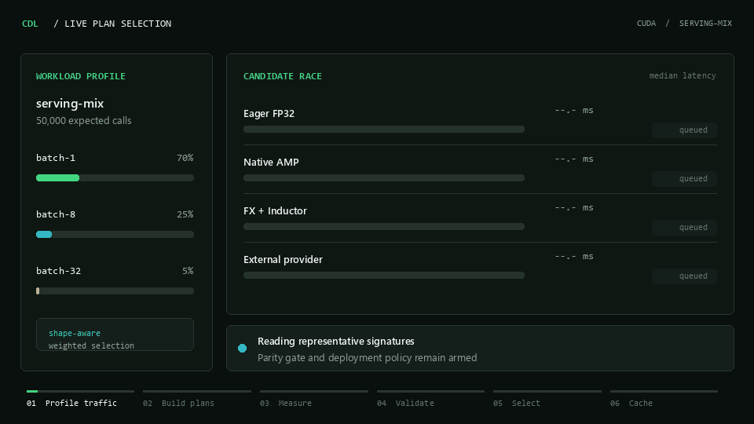

Different models want different backends.
A fixed optimization path can help a dense CNN and regress a depthwise network. Selection stays model-specific.
Open-source ML systems research
A benchmark-driven safety layer for PyTorch inference.
Give it your model and representative traffic. It races built-in compiler paths and optional runtimes, rejects candidates that are wrong or impractical, and returns the fastest valid callable with the evidence attached.
pip install custom-dl-optimizer
The complete decision in one loop
Here a provider posts the lowest raw latency, then fails numerical parity. FX + Inductor becomes the deployable winner, and the decision is cached for guarded reuse.

A fixed optimization path can help a dense CNN and regress a depthwise network. Selection stays model-specific.
Compilation and lazy first calls are included when the deployment has a finite request horizon.
Every candidate must preserve output structure and clear configured numerical tolerances before it can win.
Inside the optimizer
Backends keep doing what they do best. Custom-DL-Optimizer owns the comparison boundary: representative traffic, isolation, correctness, lifecycle cost, constraints, and fallback.
Normalize real batches, shapes, dtypes, keyword forms, and weights.
Clone the module and construct eligible built-in and provider plans.
Record setup, first calls, serial distributions, memory, and break-even.
Reject parity failures, runtime errors, and policy violations.
Return the best valid callable and revalidate it on later launches.
Useful beyond a benchmark chart
DEPLOY / 01
Model batch-size and shape frequency, cap setup and memory, then select by steady-state or projected lifecycle cost. A validated cache avoids repeating the full race on every process start.
Open deployment guideSELECTED PLAN
fx_inductorRESEARCH / 02
Keep raw serial samples, per-case parity, confidence bounds, failures, cache state, and environment metadata. Export candidate and workload CSVs, LaTeX tables, manifests, and P50/P99 figures.
Read paper protocolPAPER EXPORT
6 artifacts writtenAGENTS / 03
The host registers modules and tensors in process. Remote tools expose only workload names, runtime inspection, measured optimization, and JSON reports; weights, paths, shell commands, and Python expressions remain out of scope.
Open agent guideBOUNDED TOOLKIT
Small API, explicit policy
The simple call still works. The result remains callable and carries the complete selection report.
from custom_dl_optimizer import (
OptimizationConfig,
Optimizer,
)
optimizer = Optimizer(
device="cuda",
config=OptimizationConfig(
enable_compile=True,
plan_cache_dir=".custom-dl-cache",
min_speedup=1.02,
),
)
result = optimizer.optimize(model.eval(), sample)
output = result(sample)
print(result.selected_plan)
result.save_bundle("artifacts/run")Bring the strongest alternatives
Custom-DL-Optimizer complements backend compilers. It gives their outputs a shared correctness, measurement, constraint, and selection boundary.
Read provider contractOne comparable reportPer-case latency, parity, first call, constraints, cache state, and failures
Evidence, including regressions
The historical T4 study below motivated adaptive selection. Most eager gains came from established precision, layout, and compiler techniques, while the fixed custom path regressed on MobileNet-V2.
| Model | Eager FP32 | Inductor | Experimental | vs eager | vs Inductor |
|---|---|---|---|---|---|
| ResNet-50 | 366.997 ms | 99.254 ms | 89.307 ms | 4.11x | 1.11x |
| MobileNet-V2 | 112.703 ms | 54.312 ms | 64.372 ms | 1.75x | 0.84x |
| VGG-16 | 639.399 ms | 273.326 ms | 273.402 ms | 2.34x | 1.00x |
| EfficientNet-B0 | 146.788 ms | 70.784 ms | 66.409 ms | 2.21x | 1.07x |
| DenseNet-121 | 360.750 ms | 194.997 ms | 193.169 ms | 1.87x | 1.01x |
From first call to paper artifact
Custom-DL-Optimizer v2.2